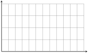

Section 9.3 CDF and CCDF
Subsection 9.3.1 Cumulative Density Function
The cumulative distribution function (CDF) \(F_X: \R \rightarrow [0,1]\) of a discrete random variable \(X\) is given by
So the CDF \(F_X(t)\) captures the probability that the value of \(X\) is at most \(t\text{,}\) while the PMF \(p_X(t)\) captures the probability that the value of \(X\) is exactly \(t\text{.}\)
Example 9.3.1. CDF for a Random Vertex Degree.
Find the CDF for the random variable \(X\text{,}\) the degree of a randomly chosen vertex of our example network.

For example, among the 7 vertices, there are 5 vertices with degree at most 3,
The CDF \(F_X\) of a discrete random variable satisfies the following properties:
-
\(F_X\) is weakly increasing (aka monotonically nondecreasing). That is,
\begin{equation*} s \leq t \qquad \Longrightarrow \qquad F_X(s) \leq F_X(t). \end{equation*} \(F_X(t)\) tends to 0 as \(t \rightarrow - \infty\) , and tends to 1 as \(t \rightarrow \infty\text{.}\)
Since \(X\) is a discrete random variable, the CDF \(F_X(t)\) is a piecewise constant function of \(t\text{.}\)
Example 9.3.2. Connecting the PMF with the CDF.
Suppose that \(X\) takes on discrete integer values. Explain why for any \(k \in \Z\text{,}\)
and
In other words, if you know the PMF, then you can find the CDF, and vice versa. Solution.
We have
because this is the definition of the CDF. Therefore, we have
Subsection 9.3.2 Complementary Cumulative Density Function
The complementary cumulative distribution function (CCDF) \(F_X: \R \rightarrow [0,1]\) of a discrete random variable \(X\) is given by
So the CCDF \(\overline{F}_X(t)\) captures the probability that the value of \(X\) is greater than \(t\text{.}\)
Example 9.3.3. CCDF for Random Vertex Degree.
Find the CCDF for the random variable \(X\) where, as above, the value of \(X\) is the degree of a randomly chosen vertex of our example network.
Example 9.3.4. Properties of a CCDF.
Using the fact that \(\overline{F}_X(t) = 1 - F_X(t)\text{,}\) write down the properties of a CCDF that are analogous to the CDF properties listed above. Solution.
The CCDF \(\overline{F}_X\) of a discrete random variable satisfies the following properties:
-
\(\overline{F}_X\) is weakly decreasing (aka monotonically nonincreasing). That is,
\begin{equation*} s \leq t \qquad \Longrightarrow \qquad \overline{F}_X(s) \geq \overline{F}_X(t). \end{equation*} \(\overline{F}_X(t)\) tends to 1 as \(t \rightarrow - \infty\) , and tends to 0 as \(t \rightarrow \infty\text{.}\)
Since \(X\) is a discrete random variable, the CCDF \(\overline{F}_X(t)\) is a piecewise constant function of \(t\text{.}\)
Example 9.3.5. Connecting the PMF and the CCDF.
Suppose that \(X\) takes on discrete integer values. Develop formulas for going back and forth between the PMF and the CCDF (analogous to how you connected the PMF and CDF above). Solution.
For any \(k \in \Z\text{,}\)
by the definition of a CCDF. We then have
In other words, if you know the PMF, then you can find the CCDF, and vice versa.
Subsection 9.3.3 Example: The Sum of Two Dice
Let's run an experiment where \(X\) is the outcome when we roll two fair 6-sided dice.
Example 9.3.6. Sum of Two Dice.
Find the values of PMF \(p(t) = p_X(t)\text{,}\) CDF \(F(t) = F_X(t)\) and CCDF \(\overline{F}(t) = \overline{F}_X(t)\text{.}\) Use the domain \(0 \leq t \leq 12\) for each. Solution.
Example 9.3.7. Sketching PMF, CDF, CCDF for Two Dice.
Sketch the graphs of the PMF, CDF and CCDF. Make any observations that you can about how these graphs are related.
PMF \(\qquad p(t)\)

CDF \(\qquad F(t) = \P(X \leq t) = \sum_{k \leq t} p(k).\)
CCDF \(\qquad \overline{F}(t) = \P(X > t) = \sum_{k > t} p(k) = 1 - F(t)\)

The following graphs are drawn to the same scale. The \(x\)-axis spans \([0,12]\) and the \(y\)-axis spans \([0,1]\text{.}\)